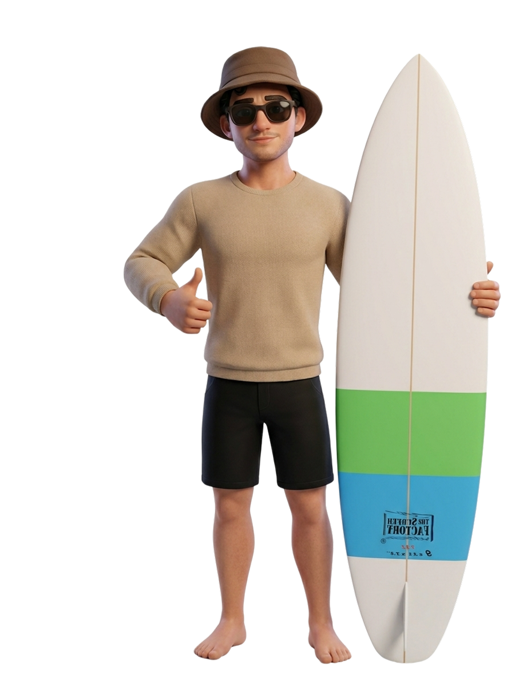

About

-
2023 – Present
Product Designer
Fischbach Group
- — Design of large-scale internal products: native Leo app (iOS/Android), Planner (staff and resource management), and Onboarding (employee onboarding).
- — Collaborate cross-functionally with engineering and stakeholders across a multi-entity organization to ship native and web products.
-
2021 – 2023
Senior Product Designer & Strategy Lead
Impact Technology
- — End-to-end design and strategy for digital products (Leo, Ökoloco, Institude Wissen, VOCHECKER).
- — Research, prototyping, and close collaboration with development.
- — Led design strategy across 4 concurrent products, partnering directly with clients, PMs, and engineering teams from concept through launch.
-
2019 – 2021
Digital Marketing Manager & UX Strategist
Colono Construcción
- — Managed advertising campaigns across Google, Facebook, Instagram, and TikTok.
- — Optimized web experience to align with each campaign, focused on conversion and KPIs.
-
2017 – 2018
UX Researcher & Product Catalog Designer
Electro Caribe S&C
- — User research and redesign of electrical product lines (industrial, commercial, home).
- — Digital and printed catalogs, plus training for key stakeholders.